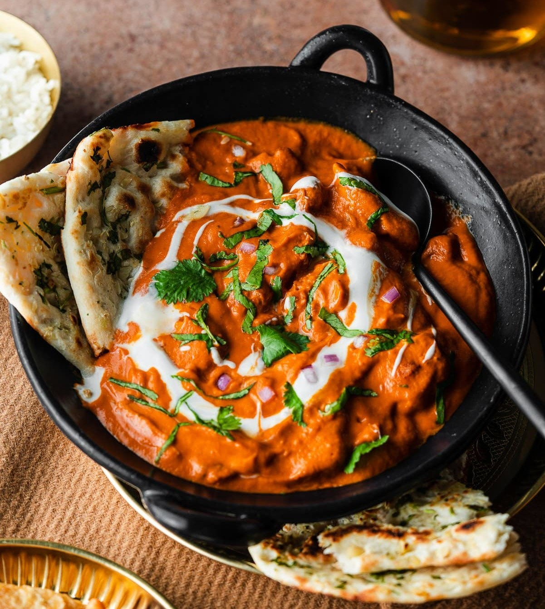

Butter chicken, a rich and creamy Indian dish, is a symphony of flavors that will tantalize your taste buds.
The succulent chicken, marinated in a blend of aromatic spices and yogurt, is then cooked to perfection in a velvety smooth tomato-based sauce.
This indulgent dish is a true culinary masterpiece that will leave you craving for more.
Whether you're a seasoned cook or a kitchen novice, this recipe is easy to follow and yields restaurant-quality results.
So, gather your ingredients, roll up your sleeves, and get ready to embark on a flavor-filled journey that will
transport you to the vibrant streets of India.
For the Marinade :
- 1 kg boneless, skinless chicken
- 1 cup yogurt
- 1 tsp garam masala, turmeric, red chili powder, cumin powder
- Ginger-garlic paste
- Lemon juice
- Salt
For the Sauce:
- Butter
- Onion, ginger-garlic paste
- Garam masala, red chili powder, cumin powder, coriander powder,
turmeric powder, salt
- Crushed tomatoes
- Heavy cream
- Cream Cheese and fresh coriander
- Vegetable Oil
- Combine chicken with yogurt, spices, ginger-garlic paste, lemon juice, and salt.
Marinate for at least 30 minutes.
- Heat oil in a pan. Fry the marinated chicken until golden brown. Set aside.
- Heat butter and oil in a pot. Sauté onion, ginger-garlic paste, and spices until fragrant.
Add crushed tomatoes and cook until the sauce thickens
- Add the cooked chicken to the sauce. Stir in heavy cream, butter, and cream cheese.
Simmer until well combined. Garnish with fresh coriander.